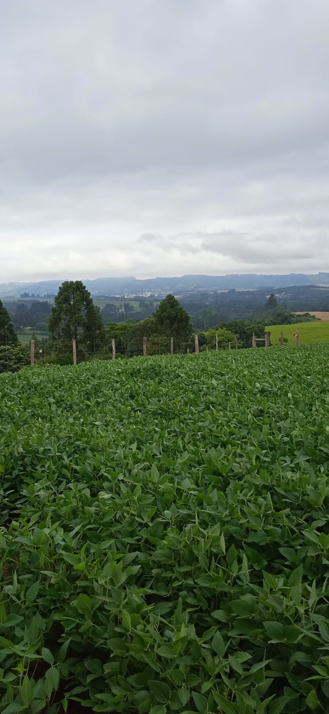
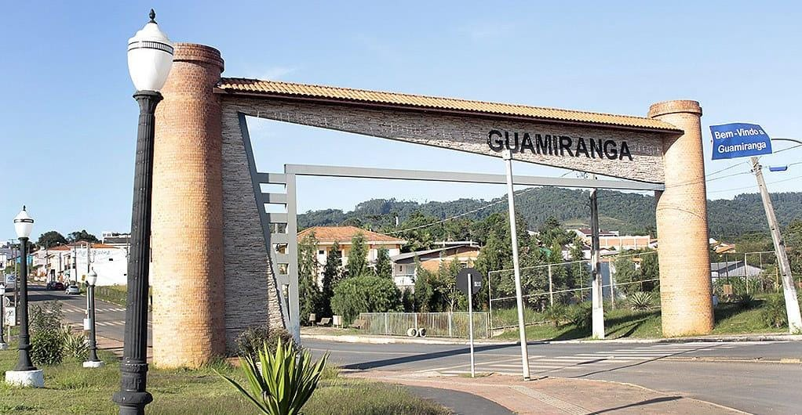
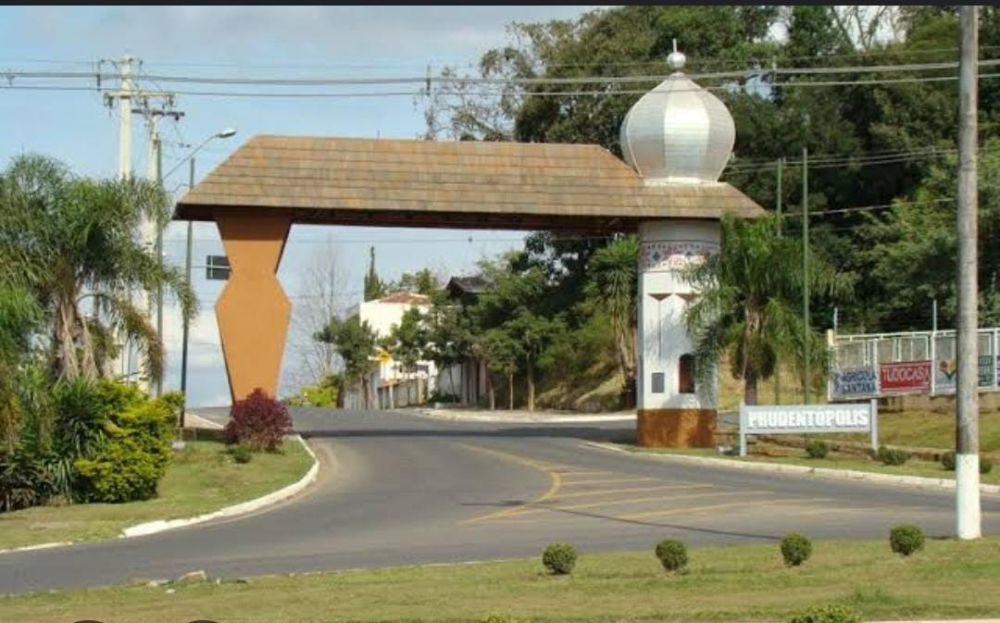
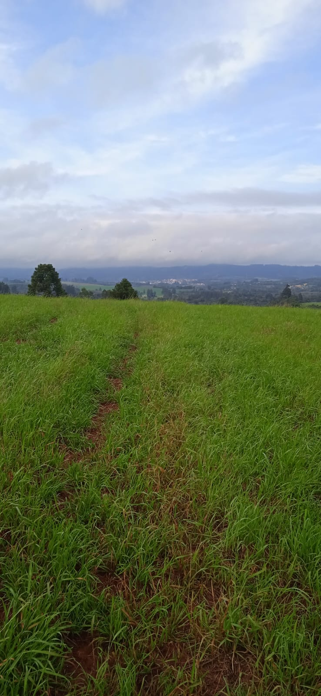

🌾 Campo
O campo é caracterizado por uma comunidade rural, geralmentecentrada na agricultura, com uma forte conexão com a terra e uma estrutura social mais tradicional, com uma produção pecuária, fornece alimentos e matétias-primas para a cidade.
Figura 1- localidade Vespeira - município Ivaí-PR
Fonte: Autoria própria
🏙️ Cidade
A cidade, por sua vez, é um espaço urbano, caracterizado por uma comunidade diversificada, economia mais complexa e uma estrutura social mais fluida, com sua indústria e comércio, oferece mercado consumidor e serviços para o campo.
Figura 2- Guamiranga-Pr
Fonte: Autoria própria
🔗 A Conexão
A relação entre campo e cidade é de interdependência, onde ambos os espaços dependem um do outro para prosperar. O campo fornece alimentos e matérias-primas para as cidades, enquanto as cidades oferecem tecnologia, mercados consumidores e serviços para o campo. Essa relação é crucial para o desenvolvimento equilibrado e sustentável de ambos. p>
Figura 3- localidade de Prudentópolis-PR
Fonte: Autoria própria
Figura 4- localidade Vespeira- município Ivaí-Pr
Fonte: Autoria própria